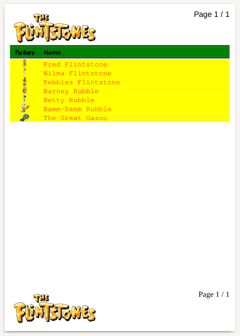

This example below shows that reports may be more exciting, with colors and images and other visual elements and settings.
Data is created as follows in the same database as the first example.
create table flintstones2
(id serial primary key, name text, filename text);
insert into flintstones2 (name, filename)
values
('Fred Flintstone', 'FredFlintstone.png'),
('Wilma Flintstone', 'WilmaFlintstone.png'),
('Pebbles Flintstone', 'PebblesFlintstone.png'),
('Barney Rubble', 'BarneyRubble.png'),
('Betty Rubble', 'BettyRubble.png'),
('Bamm-Bamm Rubble', 'BammBammRubble.png'),
('The Great Gazoo', 'TheGreatGazoo.png');
The data looks like this when queried:
ocrpttest=> select * from flintstones2; id | name | filename ----+--------------------+----------------------- 1 | Fred Flintstone | FredFlintstone.png 2 | Wilma Flintstone | WilmaFlintstone.png 3 | Pebbles Flintstone | PebblesFlintstone.png 4 | Barney Rubble | BarneyRubble.png 5 | Betty Rubble | BettyRubble.png 6 | Bamm-Bamm Rubble | BammBammRubble.png 7 | The Great Gazoo | TheGreatGazoo.png (7 rows)
The program code is almost identical to the second example with the database connection and the query added to program code, but it loads a different report XML description.
#include <stdio.h>
#include <opencreport.h>
int main(int argc, char **argv) {
opencreport *o = ocrpt_init();
ocrpt_datasource *ds = ocrpt_datasource_add_postgresql(o, "pgsql", NULL, NULL, "ocrpttest", "ocrpt", NULL);
ocrpt_query_add_postgresql(ds, "q", "select * from flintstones2;");
if (!ocrpt_parse_xml(o, "example3.xml")) {
printf("XML parse error\n");
ocrpt_free(o);
return 0;
}
ocrpt_set_output_format(o, OCRPT_OUTPUT_PDF);
ocrpt_execute(o);
ocrpt_spool(o);
ocrpt_free(o);
return 0;
}
Here's the equivalent program code in PHP.
<?php
$o = new OpenCReport();
$ds = $o->datasource_add_postgresql("pgsql", NULL, NULL, "ocrpttest", "ocrpt", NULL);
$ds->query_add("q", "select * from flintstones2;");
if (!$o->parse_xml("example3.xml")) {
echo "XML parse error" . PHP_EOL;
exit(0);
}
$o->execute();
$o->spool();
Here's the equivalent program code in PHP, using the RLIB compatibility functions.
<?php
$r = rlib_init();
rlib_add_datasource_postgres($r, "pgsql", "dbname=ocrpttest user=ocrpt");
rlib_add_query_as($r, "pgsql", "select * from flintstones2;", "q");
if (!rlib_add_report($r, "example3.xml")) {
echo "XML parse error" . PHP_EOL;
exit(0);
}
rlib_execute($r);
rlib_spool($r);
The program code uses this file contents
from example3.xml.
Note the new settings:
fontName="...",
fontSize="...",
bold="...",
italic="...",
color="...",
bgcolor="..."
and others.
Also note that the value="..."
setting indicates the file names that are used with
<Image> elements in the
report XML description. These files must be
present in the report application work directory,
or can be found in Search paths
added either in the report XML description or via
programming code.
<?xml version="1.0"?>
<!DOCTYPE OpenCReport SYSTEM "opencreport.dtd">
<OpenCReport>
<Report query="q">
<PageHeader>
<Output>
<Image width="227" height="92" value="'A_Flintstones_logo.png'" />
<Line>
<field fontName="'Arial'" fontSize="20" value="printf('Page %d / %d', r.pageno, r.totpages)" align="right" />
</Line>
</Output>
</PageHeader>
<PageFooter>
<Output>
<Image width="227" height="92" value="'A_Flintstones_logo.png'" />
<Line>
<field fontName="'Times New Roman'" fontSize="20" value="printf('Page %d / %d', r.pageno, r.totpages)" align="right" />
</Line>
</Output>
</PageFooter>
<Detail>
<FieldHeaders>
<Output>
<HorizontalLine size="2" color="'black'" />
<HorizontalLine size="2" color="'green'" />
<Line bgcolor="'green'" bold="yes" fontSize="18">
<literal fontName="'Petaluma Script'" width="7" align="'center'">Picture</literal>
<literal width="1"/>
<literal fontName="'Carlito'" italic="yes">Name</literal>
</Line>
<HorizontalLine size="2" color="'green'" />
<HorizontalLine size="2" color="'black'" />
<HorizontalLine size="2" color="'white'" />
</Output>
</FieldHeaders>
<FieldDetails>
<Output>
<Line fontSize="18">
<Image textWidth="7" bgcolor="'yellow'" align="'center'" value="filename" />
<literal width="1" bgcolor="'yellow'" />
<field color="'red'" bgcolor="'yellow'" value="name" />
</Line>
</Output>
</FieldDetails>
</Detail>
</Report>
</OpenCReport>
